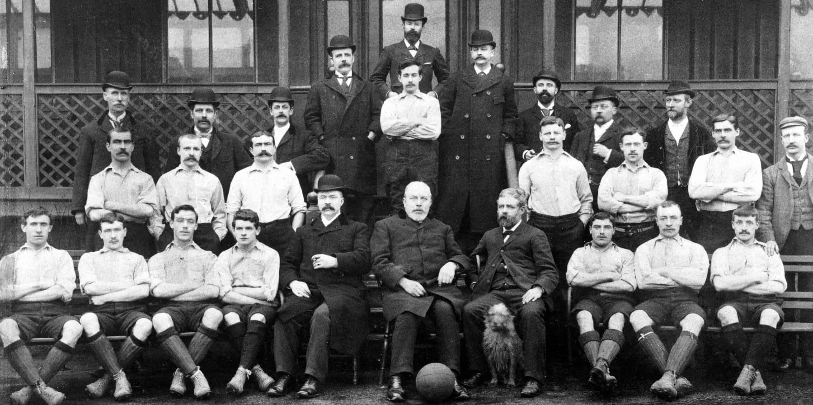

History Liverpool
Liverpool are a team in the English League. Currently playing in the Premier League the country's top league This team was founded on June 3, 1892. Its founder was John Houlding, a Liverpool businessman. This club is 125 years old.
The team is currently owned by the US-based Fenway Sports Group and chaired by the club's chairman, Tom Warner. But it is clear that the American owners have no intention of selling the club anytime soon.
The club's most prosperous era was between 1970-1980, during the era of managers Bill Shankly and Bob Presley, both of whom helped the team to 11 league titles. Raise the bar to glory by leading the era's players to collect up to seven European trophies, and that was the most flourishing era of the Merseyside club. in the North West of England
After that time, Liverpool, like a sleeping giant, failed to win the English top-flight title for nearly three decades now, and the last time Liverpool won the country's top-flight was back in 1989-90. It is still a Division 1 league, has not changed its name to the Premier League as it is today.
The team currently has Manager of the German team named Jurgen Crop, who took over the team. Create hope for fans and followers of the "Reds" giant sleeping team from the British Isles. Still waiting for success In the glorious era, let's come back again. Will he be the one to bring success and bring the club back to its heyday? Everyone is still waiting for an answer.